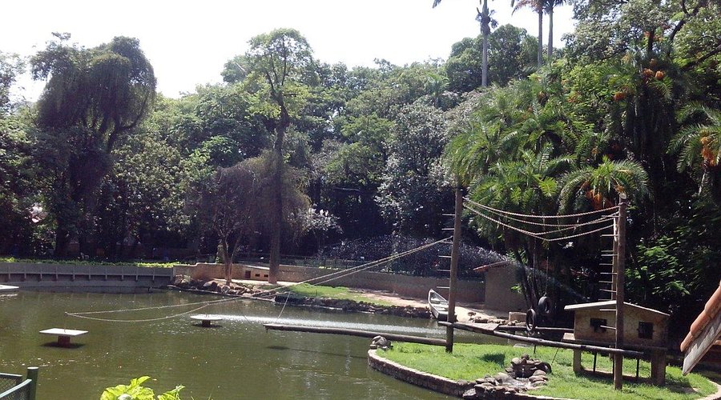
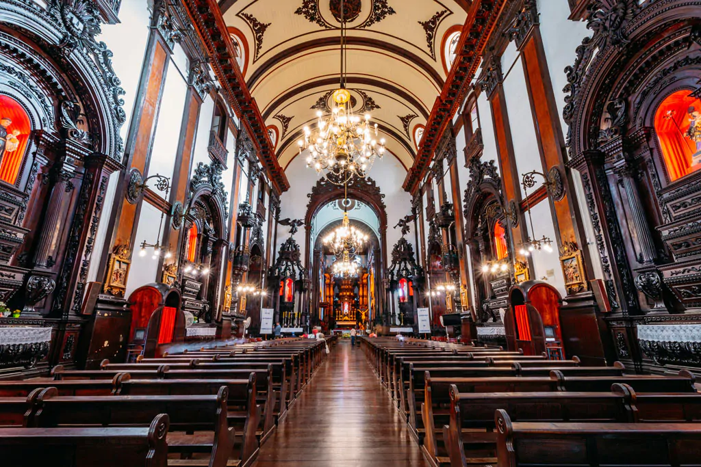
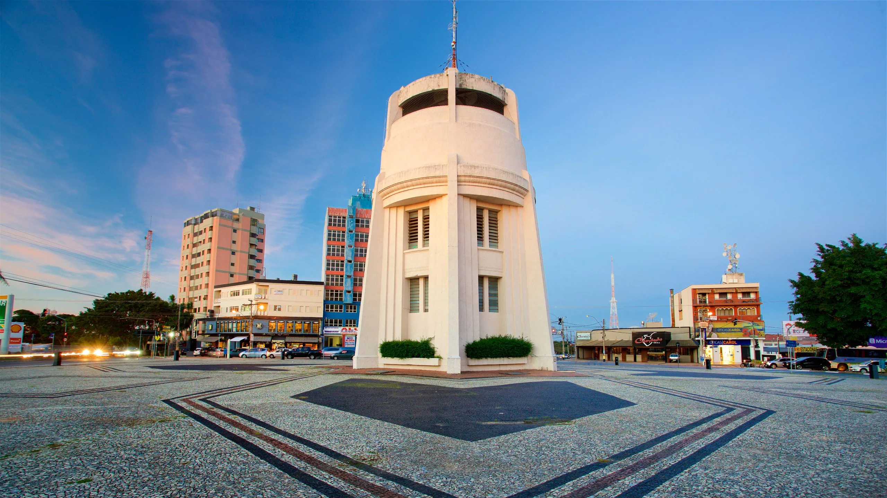

Campinas é uma das maiores cidades do interior paulista e importante polo tecnológico, educacional e econômico do país. Sede de universidades de renome como a Unicamp, a cidade alia inovação e história, oferecendo também opções de lazer, gastronomia e cultura.
Bosque dos Jequitibás – Parque histórico com zoológico, teatro infantil e áreas de lazer.
📍 Endereço: R. Coronel Quirino, 02 - Bosque, Campinas - SP.
Catedral Metropolitana de Campinas – Construída em estilo barroco, é um dos principais marcos históricos da cidade.
📍 Endereço: Praça José Bonifácio, s/n – Centro, Campinas – SP.
Torre do Castelo – Mirante com vista panorâmica de Campinas e museu sobre o sistema de abastecimento de água.
📍 Endereço: Praça Vinte e Três de Outubro - Av. João Erbolato, S/N - Castelo, Campinas.
